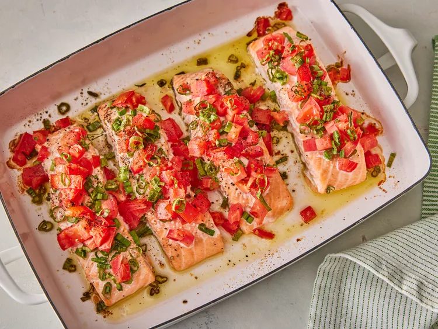

Home
Salmon Bake

Description
Step 1
Gather all ingredients.
Step 2
Preheat the oven to 350 degrees F (175 degrees C).
Step 3
Place salmon on a lightly oiled sheet pan or in a shallow baking dish, folding under thin outer edges of fillets for even cooking.
Step 4
Top salmon with chopped tomatoes and green onions, and season with salt and pepper.
Step 5
Cook salmon in the preheated oven, uncovered, until fish flakes easily with a fork, about 20 minutes.
Ingredients
- 1 (1 pound) salmon fillet, halved
- 1 small tomato, chopped
- 5 green onions, chopped
- ¼ teaspoon salt
- ¼ teaspoon pepper